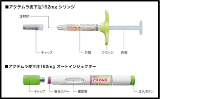

SIMと比べたACTの強み
- ●ACTは安価で医療経済性が高い（SIMは通常量50㎎でACTの1.5倍）
- ●ACTはAIがあり、患者さんの利便性が高い（SIMはAIがない）
- ●ACTは臨床成績が高くエビデンスも豊富（SIMはACTに勝るエビデンス無）
- ●ACTはMTX非併用でも有効性はほぼ変わらない（SIMはMTX非併用で有効性低下）
- ●ACT-MonotherapyはEULAR Recommendations2016で推奨されている（SIMはMono推奨の記載なし）
- ●ACTは効果不十分時にQWが可能であり、安全性はQ2Wと同等である（SIMは増量できるものの、100㎎で重篤な感染症が増える）
- ●ACTはTNF阻害薬効果不十分例に有効性が高い（TNF→TNFスイッチはMOAより有効性が劣る）
- ●ACTは充実した副作用データ、安全対策がある（SIMは全例調査なし）
